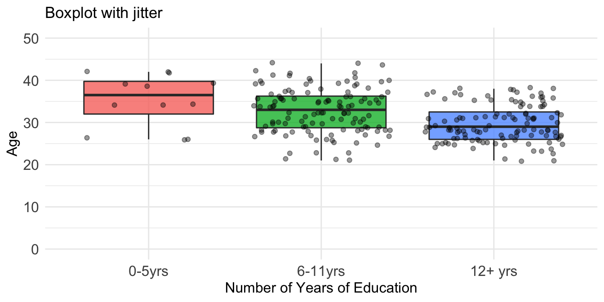

Vizing your Data!
BOXPLOT (with jitter)

ggplot(infert, aes(education, age)) +
geom_boxplot(aes(fill=education), alpha=0.8, show.legend = FALSE) +
geom_jitter(, alpha=0.4, show.legend = FALSE) +
xlab('Number of Years of Education') + ylab('Age') + ylim(0,50) +
theme_minimal() + ggtitle('Boxplot with jitter') +
theme(axis.text=element_text(size=12),
axis.title = element_text(size=12),
legend.text = element_text(size=12),
legend.title = element_text(size=12),
plot.title = element_text(size=13))plot information
|
About
|
A boxplot is a visual representation of the statistical five numbers summary of a continuous variable (minimum, first quartile, median, third quartile and maximum). It depicts the centering, spread and distribution of the data. Jittering allows clearer visualization of spread of actual data points collected. |
|
Common usage
|
Visualizing differences among different groups |
|
Number of /
Type of Variables |
1 numeric 1 per numeric and categorical |
|
R Package
|
ggplot2 |
| R Function | geom_boxplot, geom_jitter |
viz-2